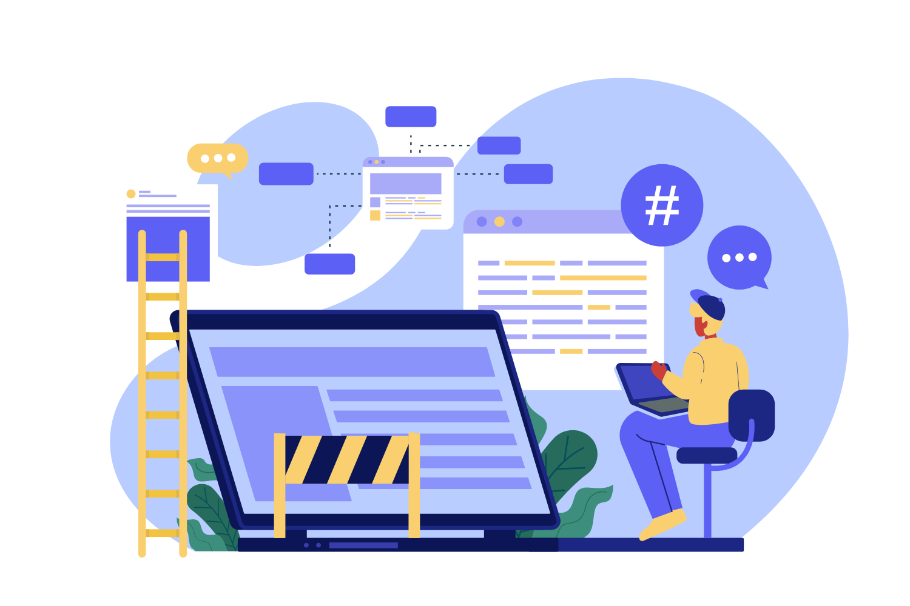

Welcome to TrackDesk Tracker
Track time on tasks, sync activity to your dashboard, and stay productive throughout the day.
- Real-time timer for projects & tasks
- Automatic sync to TrackDesk web dashboard
- Secure sign-in with your organization account
Sign in using the same TrackDesk website email and password.